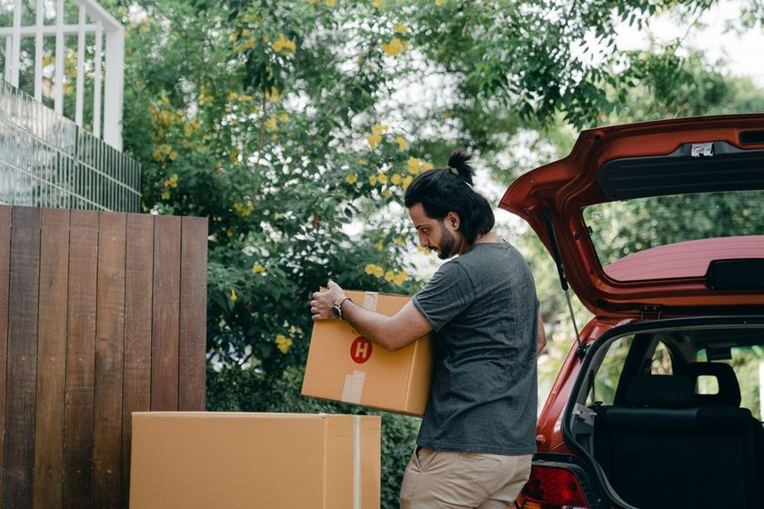

Reading the Truck Bed Before You Load It
The floor of a moving truck is a diagram, if you read it before the first box goes in.

Before a single box goes in, an experienced loader stands at the open tailgate and does something that looks like nothing: they look. Not at the pile of boxes on the driveway, not at the list taped to a clipboard, but at the empty rectangle in front of them — its length, its height, the wheel wells eating into the floor near the back, the tie rail bolted along one wall. That rectangle is the actual constraint of the day. Everything the household owns has to be translated into it. Read the bed first, and the load order mostly writes itself. Skip that step and start hauling in whatever happens to be closest to the door, and by the second hour you're pulling boxes back out to fix a stack that's already leaning — the slowest, most expensive mistake a moving day can make.
The Bed as a Diagram, Not an Empty Box
A truck bed isn't neutral space. It has a floor that can bear even weight and a floor near the wheel wells that can't, a front wall that can take real pressure and a rear door that can't take any, and a height that runs out long before the floor does. Loaders convert that geometry into rough zones before touching anything: a nose section against the cab wall, a stable middle, and a tail near the door. Each zone gets a job. The nose holds the load's anchor weight. The middle holds volume. The tail holds whatever needs to come off first. Deciding those jobs in advance is what separates a load plan from a load — the plan exists before the first box crosses the threshold, not after the fortieth.
Reading Weight Before Reading Rooms
The truck doesn't know or care which room a box came from. It only registers how much the box weighs and where that weight sits relative to the floor and the axle. That's the same idea we work through in The Weight, Not the Room: a house organizes itself by room, but a truck organizes itself by mass. Heavy, square, low-profile boxes belong low and forward, close to the cab wall, where their weight is supported directly by the floor and doesn't ride on anything else. Light, irregular, or crushable items belong up top and toward the back, where a shift in transit does the least damage. A loader scanning a driveway full of boxes isn't asking "kitchen or bedroom" — they're asking which boxes are dense enough to be a foundation and which ones are only fit to sit on top of one.
You don't load a truck room by room. You load it top-down in your head first — heavy at the bottom, light on top, needed-first near the door — the way you'd read a diagram before you'd sign it.
The Order Loaders Actually Use
In practice, the order comes down to a short set of questions asked about the whole house before the truck ever fills up, not one box at a time. The idea overlaps with what we cover in Density Per Box, Explained — a box's size tells you almost nothing about how it should be handled; its density does.
- How much does this category of belongings weigh as a group, not how many boxes did it produce?
- What has to come off the truck first at the new address — day-one boxes, tools, cleaning supplies?
- What's the squarest, heaviest, most stackable item in the house — because that's the first thing loaded, not the last?
Answering those three questions before opening the truck doors turns a random pile into a short, ordered list. The table below is a simplified version of the zones a loader is working from as they walk that list.
| Position in the bed | What goes there | Why |
|---|---|---|
| Nose, against the cab wall | Heaviest, squarest boxes and large furniture | Anchors the load forward so it can't slide backward under braking |
| Lower-middle floor | Dense, medium-weight boxes — books, cookware | Uses the strongest part of the floor without adding stack height |
| Upper-middle, stacked | Lighter boxes, cushions, soft goods | Weight tends to decrease going up, which keeps the stack's balance low |
| Tail, near the door | Day-one items and anything fragile at reachable height | Last loaded, first unloaded — matches the order to what's actually needed |
| Wheel-well gaps | Soft, odd-shaped items — bags, rolled rugs | Fills dead space that won't hold a flat, stackable box anyway |
Field Note
Loaders read the bed's height before its floor. A truck that's four feet from floor to ceiling can only take three stacked medium boxes before the next layer has nowhere to go — so the stack height, not the floor space, usually sets the real limit on how the load gets built.
Building the Wall, Not Just the Floor
A load doesn't grow across a truck bed the way boxes grow across a garage floor. It grows as a wall — one vertical face built from front to back, each column keyed against the one beside it so nothing has a gap to lean into. Loaders build the nose column first, floor to ceiling where the boxes allow it, then step backward column by column, using furniture pads and straps at the tie rail to keep the wall from shifting once it's a few feet deep. A wall that's built loose in the middle doesn't fail while it's being built — it fails an hour later, on the highway, when a turn finds the one column that was never actually keyed to its neighbor.
The Corners Nobody Plans For
Every truck bed has dead space that a box-by-box plan tends to miss: the wedge above the wheel wells, the sliver behind the last full column, the gap under a dresser once it's tipped on its side. Soft, compressible items are the only things that belong there — duffel bags, rolled rugs, bagged linens — because they're the only things that can take the shape of a space instead of demanding a flat one. Leaving those corners empty isn't caution; it's wasted volume that gets filled later by boxes that were never meant to go there, wedged in sideways because nothing else fit.
What the Load Order Predicts About the Unload
The whole point of reading the bed first is that the same diagram runs in reverse at the other end. Whatever went in last comes off first, so the tail of the truck should already hold what the first hour at the new place actually requires. A load plan that only thinks about getting boxes onto the truck, and never about the order they'll come back off, tends to bury exactly the things that get asked for within the first ten minutes.
About This Log
This entry describes patterns Stowage has observed in how loaders plan a truck bed. It's a way of thinking about weight and order, not instructions for a specific vehicle, load, or item — and it isn't a substitute for guidance from a professional moving crew.